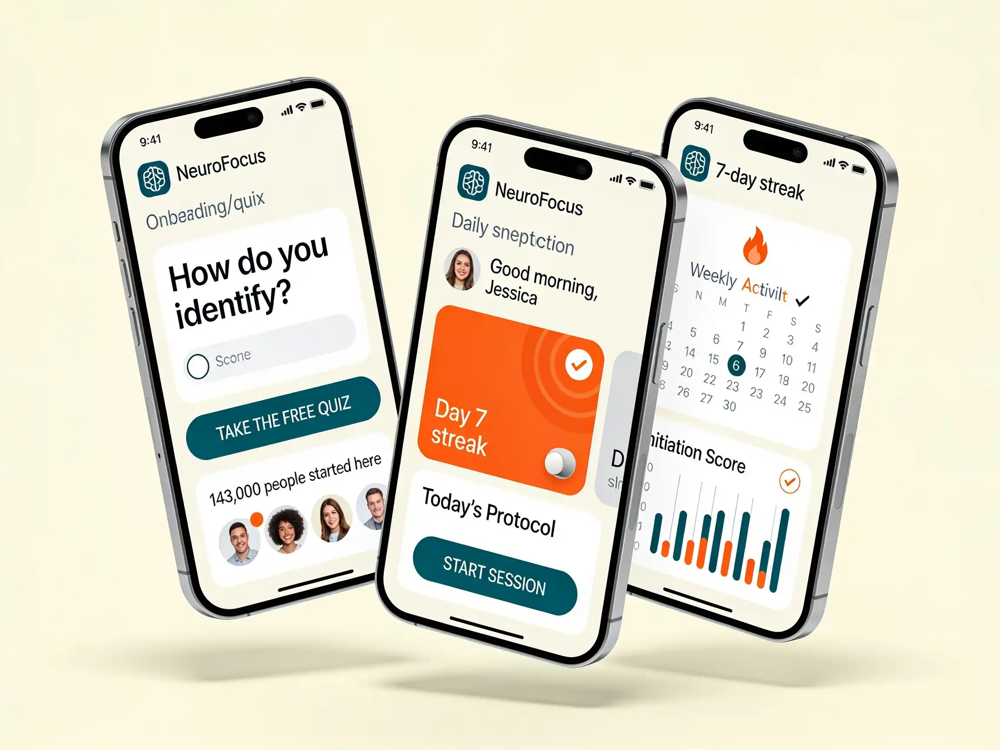
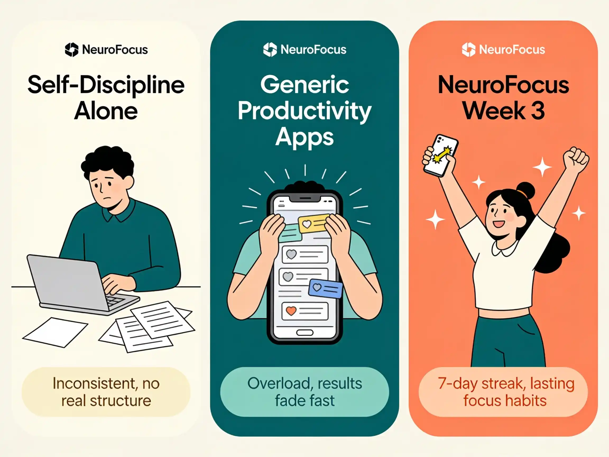

I had 9 things on my list that Monday morning.
The quarterly report. The email I'd been avoiding for 11 days. The presentation I'd promised to finish "this weekend" — three weekends in a row.
I knew exactly what I needed to do.
I opened Netflix.
Three hours later, I was on the couch — not resting, not actually watching — just existing in that specific paralysis that's worse than laziness, because you can see yourself doing it and you still can't stop.
This was my life. Not the life people saw.
They saw the promotion. The apartment that looked clean (because I'd scramble-cleaned for three hours before anyone came over). The projects I appeared to handle effortlessly.
What they didn't see: 34 open browser tabs, none of them the thing I was supposed to be doing. Alarms I set, snoozed, and eventually disabled. A to-do list that had been on the same page for six weeks.
I wasn't lazy. I knew I wasn't lazy — I'd hyperfocus for 14 hours straight when something actually interested me.
I just couldn't start the things I needed to start.
For six years, I tried to fix this.
Pomodoro Technique. Notion databases. Time blocking. Atomic Habits — twice. Morning routines. Cold showers. Accountability partners. A whiteboard. Two different planners from the same Instagram ad.
Each one worked for exactly 9 to 14 days.
Then I'd slip. Then I'd feel ashamed. Then I'd try something new.
I thought I had a discipline problem.
Then a researcher from Oslo told me something that changed everything.
The University of Oslo Study That Made Me Reconsider Everything I Thought I Knew About Procrastination
It started with a podcast episode I almost skipped.
The guest was Dr. Lena Hoffmann, a behavioral neuroscience researcher at the University of Oslo. She'd spent 12 years studying a specific pattern in high-achieving adults — people who had every resource, every motivation, every external reason to perform — and still couldn't initiate the work that mattered most to them.
She called it the Executive Freeze Loop.
Dr. Lena Hoffmann
12 years researching executive dysfunction in high-achieving adults
"The people who come to us are almost always intelligent, ambitious, and extremely self-aware. They know exactly what they should be doing. And that's precisely the problem."
I almost stopped listening. But then she said something that made me sit up.
She explained something I'd never encountered before: Norway has the highest documented rates of executive dysfunction and ADHD in the developed world. But it also has the lowest rates of stimulant medication use. For 40 years, Norwegian behavioral researchers have been refining non-pharmaceutical protocols — interventions specifically designed to interrupt the Freeze Loop at the neural level, without medication, without years of traditional therapy.
Their research data was striking: 87% of participants showed measurable improvement in task initiation within 21 days.
Not from trying harder. From training the brain differently.
Why "Just Start" Is The Worst Advice Anyone Can Give You
Here's what that research revealed — and why it explains every system you've ever abandoned.
Your brain isn't missing discipline. It isn't broken. It's stuck in a pattern.
When your brain perceives a task as important, complex, or high-stakes, it triggers a stress response. In most brains, that stress sharpens focus and drives action. But in brains with a lower activation baseline — which researchers estimate affects roughly 1 in 4 high-achieving women under 45, the majority of whom have never been formally diagnosed — the stress response doesn't activate focus.
It activates freeze.
The part of your brain responsible for starting tries to initiate. But the part that reads "important" as "threat" overrides it. With that override in place, starting becomes neurologically near-impossible.
That's what makes the pattern so disorienting. When the freeze is happening, your brain isn't failing. It's working. When you reorganize the desk instead of starting, make tea, open another tab — those aren't character failures. That's your brain executing a protection response it was built for. It registered the task as high-stakes. It's keeping you safe. The problem is that the threat isn't real. And that kind of pattern responds to a very specific kind of intervention.
This is why the Pomodoro Technique works for 12 days and then collapses. This is why Atomic Habits changed your life for two weeks. This is why you have seven different productivity systems and zero that actually stuck.
You weren't failing the systems. The systems were failing to address the actual problem.
What Every System You've Tried Has In Common
Every solution you've tried — every book, course, system, and app — shared the same hidden assumption: fix the outside, and the inside will follow. The clean inbox. The finished report. The consistent habit.
None of them can reach the neural pattern underneath. Because the problem was never external.
This is why therapy can help — but takes months and costs $150 to $300 a session to get there. It's why courses and books teach you the right concept at the wrong moment. It's why free apps and reminders don't work: they tell you to start, without addressing why starting feels impossible.
And it's why willpower doesn't just fail — it actively makes the freeze stronger. Pushing harder signals to your brain that this task is genuinely dangerous. So it protects you harder.
What was needed was something that could deliver this protocol at the exact moment the pattern activates. At 8 AM on a Tuesday, when the email has been open for three minutes and you haven't typed a word. Personalized to the specific freeze type that shows up in your brain. Built by the researchers who spent 12 years mapping exactly how this works.
That's what Dr. Hoffmann's team built. Not a book. Not a course. Not another reminder app.
They called it NeuroFocus.
What Actually Happened When I Started Using It
The app asked me to rate my current stress: 1 to 10.
Then it gave me one task. One.
"Name three things in your immediate environment right now."
That's it. 90 seconds.
But then it explained why.
"Your brain just completed a task. That pathway is now primed for the next 4 to 6 hours. Now — what's the one thing you've been avoiding most?"
I typed: "The client proposal."
"Good. Here's your entry point: Open the document. Don't write anything. Just open it."
I did. And then, almost without deciding to, I wrote a sentence. Then another.
Something had shifted. I didn't understand it yet. But I felt it.
I was about to open social media instead of starting a project. An old reflex — one I'd never been able to interrupt before.
And I noticed it. Not with willpower. The way you notice a pattern once someone has pointed it out and named it for you.
"Oh. This is the Freeze starting."
I did the 90-second activation. Then I started the project.
It wasn't magic. But something was different in a way I didn't have words for yet.
The app tracked my completion rate. Seven days in a row felt significant for the first time in years — not because someone was watching, but because I could feel my brain associating "starting" with "good."
I sent the email I'd been avoiding for 11 days. Not because I had more time. Because the freeze didn't arrive.
The app's check-in asked: "How many times this week did you start something within 5 minutes of intending to?"
Week 1 answer: once. Week 3 answer: every day.
I stopped thinking about starting. I just started.
My inbox went from 280 unread to under 15. My desk stayed clear — not because I had a cleaning system, but because I stopped accumulating things while I froze.
My manager mentioned I'd seemed "different" lately. More responsive. Better follow-through. I hadn't told anyone what I was doing.

I thought I'd get more done. I did.
But I also got better sleep. More energy. The ability to be present in a conversation without running through my mental to-do list the entire time.
My closest friend noticed before I did: "You seem less frantic. Like you're actually here when we talk."
10 minutes a day changed how my brain operates. Not my schedule. Not my habits. My actual patterns.
Here's what other users are saying:
Most people have a primary freeze type and a secondary one that surfaces under stress or deadline pressure. The 2-minute quiz identifies yours — and your NeuroFocus plan is calibrated to interrupt your specific pattern first.
TAKE THE FREE QUIZ — DISCOVER YOUR FREEZE TYPE